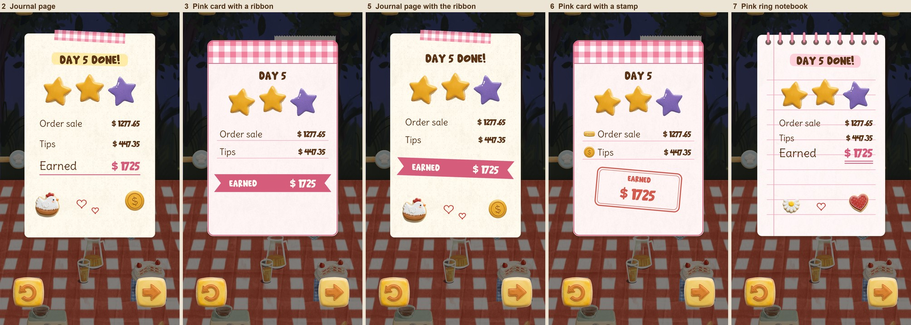
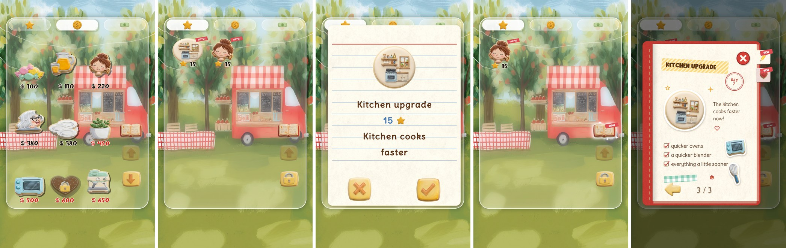
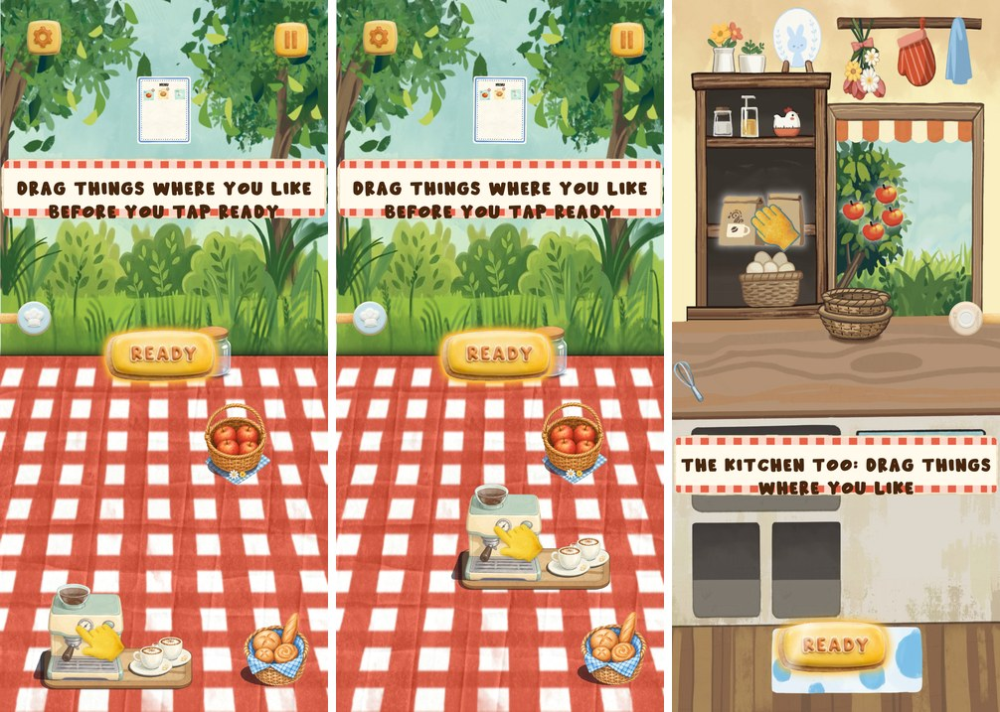
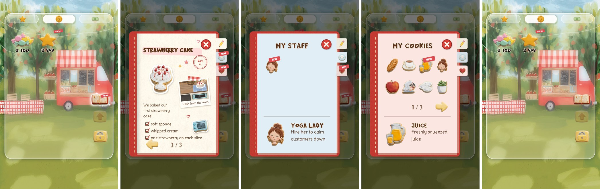

Food Truck Cafe
19 November. 2026.11.18 is live on the App Store; test build 2026.11.19 (0) in TestFlight.
1Next
You
Test build 2026.11.19 (4) is the latest in TestFlight. Everything in Current came after it; no new build until you say.
Q&A: when a new journal page should show itself.
Current: pick a day-end panel; five other things to look at.
MVP: pick a mixer.
Me
A test build on your word.
2Q&A
When should a new journal page show itself?
- Not at the moment it happens. The first cake comes out of the oven, or the first ice cream is served, in the middle of a busy day; a page over the table then costs the player customers.
- A, when the shop opens after that day (my pick): the book lives in the shop, and the shop now comes right after the day. The book's button hops, the book opens by itself on the new page, the player closes it and shops on. It also shows where the journal is kept. Several new pages: the book opens on the first, the arrows lead on.
- B, on the day-end panel: under the stars, a small "new journal page" strip with the page's little picture; a tap opens the page. Nothing opens by itself.
- C, both: the small strip on the day-end panel as a promise, and the page itself when the shop opens.
- Bought in the shop (coffee machine, kitchen upgrade): the page opens right after the cookie is eaten, in every option.
- Today the page does not open by itself: the book's button shows NEW with its glow, and the pencil tab shows NEW.
3Current
Release 1: the look. All of this is in the project, after build (4), each checked in the editor.
Day-end panel, second round: your 2 and 3, and three more. Mock-ups; the game still has the pink paper.

- 5: the journal page of 2, with 3's ribbon for the total.
- 6: the pink card of 3, a small cookie beside each row, the total as a red ink stamp (like the journal's day stamp).
- 7: a pink ring notebook page: rings on top, pink lines, the total underlined twice.
Kitchen upgrade, and prices you cannot pay yet.

- Kitchen upgrade: on the stars tab, 15 stars, the kitchen cookie, "Kitchen cooks faster". Once bought, every wait in the kitchen is a quarter shorter: the ovens, the blender, the waffle machine, and everything that grows or comes back (apples, coconuts, juice, coffee bags, cookies). A new machine such as the mixer joins with one line.
- Its journal page comes with the purchase; it is on the Visuals page too.
- Cards you cannot pay for yet: the same cookie as every card (no dark shape), the price in red, and a tap does nothing.
The arranging lesson: on day 2, on a real thing.

- Day-1 tutorial: no arranging in it any more.
- Day 2, the first arranging time: the banner stays, with new words; the old picture of a hand and a bread basket is gone; the hand carries the real coffee machine once, and in the kitchen the coffee bags. A touch anywhere ends the lesson and puts the thing back.
Shop before the map; NEW on the book; the opening page's photo.

- After a day: the day-end panel, then the shop, then the map (it was the map first).
- The book's button wears NEW and the new glow for a new journal page, cookie or staff member. Inside, every tab with something new wears a small NEW; each part clears only its own.
- Opening day page: its photo is now a real first day: two first customers, no yoga coach, chef or flower pots. It is on the Visuals page.
4MVP
Release 2, this weekend: the kitchen flow, with a baking mixer. Waiting for your flow.
The mixer, like your photo but cuter.

5Backlog
Nothing open.
6Analysis
Nothing open.
7Marketing
Nothing open.